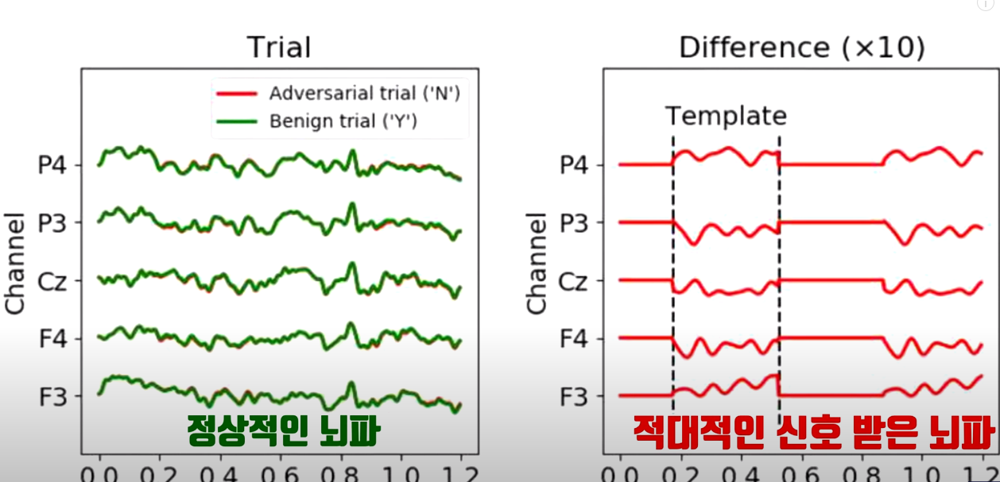
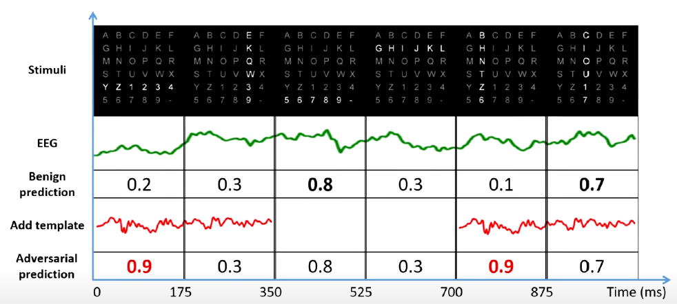

| 메인 페이지로 이동 | PDF로 보기 | |||
현재 기술로는 촉각을 전달하는 것이 고작이지만 언젠가는 분명 우리의 뇌를 조작함으로써 가상의 세계로 들어가는 것도 가능해질 것이다. 당연히 아직 가상세계로 가기는커녕 뇌를 조종하는 것도 완전하지 않다. 뇌에서 보내는 정보를 사람이 완벽하게 읽어낼 수 있어야 뇌파를 조종해서 가상의 세계로 갈 수 있을 것이다. 그런데 새로운 가상세계를 가던지 아니면 뇌파를 통해서 내가 원하는 증강현실을 내 방에 구축하던지 뇌에 장치를 달고 컨트롤해야 한다. 그렇게 컨트롤을 하려면 일단 뇌를 읽을 수 있어야 한다.
뇌-컴퓨터 인터페이스(BCI)는 인간의 두뇌와 컴퓨터를 직접 연결해서 뇌파를 통해 컴퓨터를 제어하는 기술을 말한다. 뇌파를 통해 휠체어나 로봇 등을 조종할 수도 있는 것이다. 뇌에 직접 칩을 넣어서 뇌파를 측정하는 방식과 헤드셋을 이용하여 뇌파를 측정하는 방식이 있다. 이렇게 뇌파를 측정하는 이유는 가장 간단하기 때문이다.
미국에선 이미 고등국방연구원과 NASA를 중심으로 연구가 매우 활발하게 이루어지고 있다. 그러나 관련 연구들을 보면 한국은 거의 없다. 그런데 미국 대학과 연구소는 없는 곳이 거의 없다. 이 기술을 이용하면 어떻게 될까? 만약에 자신이 목소리를 낼 수 없는 장애를 가지고 있다고 하자. 그런데 하고 싶은 말이 있으면 뇌는 어떤 신호를 보낼 것이다. 이것을 기계가 대신 읽고 말해주는 것이다. 즉 신체적으로 문제가 있는 사람들에게 큰 도움이 될 수 있는 것이다. 뿐만 아니라 뇌를 읽어서 손을 쓰지 않아도 자동으로 움직일 수 있는 휠체어를 만들어낼 수 있는 것이다. 지금은 SF영화나 드라마에나 나올법한 그런 헛소리라고 말하는 사람들도 있을 것이다. 이것은 아직 스티브잡스처럼 이런 것을 상품화할 수 있는 사람들이 없어서 그런 것으로 보인다. 상품은 있는데 “굳이 이걸 왜 사야돼?”라는 생각을 하는 소비자들에게 그 중요성을 인지를 많이 못시키고 있는 것이다. 일론머스크는 2016년 창업한 뉴럴링크가 곧 세상을 바꿀 것이라 믿는다.
그런데 많은 공학자들이 신경을 안쓰는 분야가 있다. 바로 뇌 보안이다. 아직 개발도 안됐는데 벌써부터 해킹을 당했기 때문이다. 이 것은 뇌속에 있는 칩을 해킹함으로 목소리도, 움직임도 잠궈버릴 수 있는 것이다. 더 무서운 것은 이를 통해 자유의지를 박탈해버릴 수 있는 것이다.
실제로 2020년 3월4일 우한의 화중과학기술대학교 Xiao Zhang을 비롯한 네 명의 연구원과 세계적인 석학 호주 테크놀로지 시드니 대학의 Lin 연구원, 캘리포니아 UC샌디에고의 Jung 연구원은 오픈 아카이브에 아주 흥미로운 논문을 발표한다. SSVEP나 P300같은 유명한 스펠링 시스템이 있다. 머릿속으로 어떤 스펠링을 생각했을 때 나타나는 뇌파를 통해서 글자를 표시해주는 시스템이다. 쉽게 말해서 머릿속의 주파수를 분석함으로써 사용자가 어떤 단어를 원하는지 파악하는 것이다.
연구진들은 지금 연구방향을 보면 이런 시스템을 더 빨리 정확하게 만들어지는 것에 초점이 맞춰져 있는데, 보안은 어떨지 의문점이 생긴 것이다. 그래서 아주 작아 쉽게 찾아내기 어려운 뇌파를 어지럽히는 신호를 보내봤다. 예를 들면 이 신호는 딥 러닝 시스템이 판다 사진을 원숭이로 오인시키는 적대적인 신호였다. 정상적인 시스템이라면 이 정도의 공격은 실패할 것이다. 그런데 전혀 대비가 되어있지 않았다. 아주 작은 신호임에도 불구하고 완전히 망가진 것이다.
 이 사진에서 0~350, 700~1050ms까지의 신호가 적대적인 공격을 받은 경우의 수치인데, 0.2여야 할 것이 0.9로, 0.1이어야 하는데 0.9로 인지시켜버렸다. 이에 대해 연구진은 “우리의 연구가 지금 사용되는 EEG기반 시스템들이 얼마나 취약하고 보안에 대한 연구가 이루어지지 않는지 알려질 수 있는 계기가 되길 바란다.” 라며 보안에 대한 연구의 중요성을 알렸다.
아주 간단한 신호임에도 불구하고 뚫려버리는 것을 보면 아직은 갈 길이 먼 것이라고 볼 수 있다. 가상세계를 열기 위해 뇌를 컨트롤하기는커녕 기기와 연결하는 것에도 문제가 있기 때문이다. 가상세계에서 우리가 원하는 행동을 하기 위해서는 일단 뇌파를 완전히 읽어내고 컨트롤함으로써 새로운 세상의 문을 열 수가 있는 것이다. 그 과정에서 다른 신호에 뇌가 뚫리지 않도록 보안을 유지해야 하는데 이 것이 아주 어렵다고 한다. 또한 뇌파를 기계와 연결하는 과정에서 필연적으로 따라오는 윤리적인 문제들도 있을 것이다.
현재까지는 컴퓨터, 스마트폰의 인터넷 등의 분야에서만 보안을 신경써왔다. 그러나 이제는 뇌파를 조작할 수 있는 칩이나 기계 등에도 강한 보안시스템을 만들 수 있도록 해야 할 것이다. 또한 기술적인 것으로 예방하는 것과 함께 이런 분야에 대해서는 아직 다른 나라를 따라가지 못하고 있는 법을 외국의 사례를 참고하여 개선하는 등을 통해 해킹의 위험성을 방지해야 할 것이다. 소설 앱을 보면, 가상현실에 접속하여 자신이 캐릭터가 되어 게임을 플레이하는 것을 주제로 한 소설들이 매우 많다. 이 소설들이 많은 인기를 끌고있는 것을 보면 많은 사람들이 이러한 기술에 대해 흥미를 갖고 있고 원하는 것으로 보여진다. 이런 사람들을 위해서라도 빠른 발전이 되었으면 좋겠다.
참고자료 : 논문 리뷰 유튜버 '에스오디 SOD'